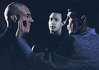
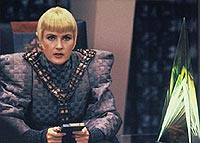
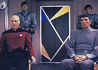
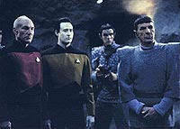
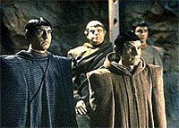

|
MANCHETE
DO EPISDIO
Enredo
permite desenvolvimento para
Spock e examina sociedade Romulana
Episdio
anterior | Prximo
episdio
Sinopse:
Data Estelar: 45245.8.
Picard e Data encontram Spock em Romulus. O Vulcano inicialmente
pouco cooperativo quando o capito o questiona sobre detalhes de
sua misso. Entretanto, a tenso reduzida quando Picard
partilha a triste notcia da morte de Sarek e tenta cumprir o ltimo
pedido de seu amigo ao revelar seu amor pelo filho. Spock ento
conta a Picard que o propsito de sua misso reunificar os
Romulanos com os Vulcanos. A revelao assusta Picard, que no
acredita nas intenes do governo Romulano. Aps conhecer isso,
Data volta nave Klingon que os trouxe a Romulus e tenta acessar a
rede de computadores Romulana.
 Na
Enterprise, Riker continua a investigar o roubo da nave Vulcana. Ele
faz contato com Amarie, a ex-mulher do traficante que comandava a
nave destruda pela Enterprise no depsito de Galor II. Enquanto
isso, o senador Pardek leva Spock para conversar com Neral, o
proconsul Romulano, que diz apoiar a reunificao.
Entretanto, depois que Spock deixa o recinto, a comandante Sela
aparece no escritrio do poltico Romulano. Mais tarde, Picard diz
a Spock que no acredita que Neral tenha oferecido seu apoio to
rapidamente, indo contra os tradicionalistas Romulanos. Spock tambm
se mostra ctico, mas decide que do melhor interesse da misso
que ele continue com seu plano, para descobrir se os Romulanos tm
ou no um interesse oculto.
Logo depois, na nave Klingon, Spock oferece a Data sua ajuda para
acessar o sistema Romulano. Ao mesmo tempo, Amarie revela a Riker o
scio de seu marido morto, um traficante de armas Ferengi chamado
Omag. Aps ser ameaado pelo comandante, Omag revela que a nave
Vulcana foi levada para Galorndon Core, perto da Zona Neutra --o que
aponta para um possvel envolvimento Romulano.
 Riker
imediatamente conta a Picard as notcias, e os dois se perguntam
como a nave Vulcana roubada se encaixa no cenrio. O capito
ordena a Riker que permanea investigando, indo para Galorndon
Core. Enquanto isso, Data finalmente consegue acesso ao sistema
Romulano, e ele e Picard voltam para a superfcie para informar
Spock de suas descobertas.
Eles so emboscados nas cavernas e Spock conclui que Pardek e Neral
os traram, um fato que fica ainda mais claro quando Sela aparece e
leva o grupo como prisioneiro, informando que os planos Romulanos no
so sobre reunificao, mas sim sobre a conquista de Vulcano.
Na Enterprise, Riker estranha quando no consegue fazer contato com
Picard. Enquanto isso, Sela revela seu plano de forar Spock a
fazer um discurso, em que ele anunciaria a chegada das naves
Vulcanas roubadas. As naves, disfaradas como portadoras de um
enviado de paz Romulano, esto na verdade ocupadas por tropas de
ataque enviadas para dominar Vulcano.
 Quando
Spock se recusa a cooperar, Sela mostra uma imagem hologrfica do
Vulcano, que ser usada no lugar dele para o discurso. Quando Sela
deixa a sala, Data usa o terminal para recriar no local falsas
paredes hologrficas, dando a impresso de que eles teriam fugido.
Eles tambm enviam uma mensagem subespacial, narrada por Spock,
sobre a real inteno das naves Vulcanas. Os trs escapam, aps
renderem Sela e um par de soldados, mas Spock decide permanecer em
Romulus para continuar trabalhando pela reunificao. As trs
naves Vulcanas so destrudas por uma ave de guerra Romulana, para
evitar a captura de seus soldados.
Comentrios:
A concluso de "Unification"
to redonda que parece at ter sido escrita por um frio e
calculista Romulano. Felizmente, o que no falta calor humano
nessa bonita histria que traz tona tanto um dos mais
fascinantes elementos histricos de Jornada --a ciso entre
Romulanos e Vulcanos-- e um dos mais envolventes relacionamentos
familiares da srie --entre Spock e seu pai, Sarek.
 Se
na primeira parte, Patrick Stewart fez uma bela dobradinha com Mark
Lenard para mostrar o relacionamento entre Picard e Sarek, o mesmo
efeito aqui obtido com o mesmo Stewart e Leonard Nimoy. A interao
entre o capito da Enterprise e Spock , para parafrasear o
Vulcano, fascinante.
As discusses que os dois compartilham soam extremamente reais e
compatveis com o histrico dos dois. Spock, agora j maduro e em
paz com seu lado humano, obrigado a enfrentar a morte de seu pai,
claramente tentando esconder (sem sucesso) sua perturbao com o
evento. Picard, por outro lado, tenta convencer o Vulcano de que os
tempos de "diplomacia de caubi" j foram, e que h mtodos
melhores para buscar a reunificao do que abandonar a Federao
e partir para uma misso secreta no corao de seu inimigo.
Durante esses dilogos, no faltam referncias histricas ao
passado de Jornada. Mais notvel a meno de um "outro
capito da Enterprise" e do "pequeno papel" que
Spock teve nas conversaes de paz com os Klingons. A referncia
ao filme "Jornada nas Estrelas VI - A Terra
Desconhecida", que foi lanado na mesma poca do episdio.
A idia, compartilhada por Leonard Nimoy (produtor-executivo do
filme) e Rick Berman (produtor-executivo da Nova Gerao), era um
usar o terreno do outro para fazer uma promoo cruzada dos dois.
E ningum pode dizer que isso no foi feito de forma genial. E
genuna.
O dilogo travado por Spock e Data na nave Klingon tambm serve a
um propsito muito nobre --mostrar que os dois personagens no so
a cpia carbono um do outro. Em poucas linhas, fica muito claro que
eles correm na direo oposta um do outro. Alm de ser um dilogo
interessante, que mais uma vez mostra Spock em paz consigo mesmo e
com suas emoes, ele tambm traz paz para o andride, que era
perseguido pelo fantasma do Vulcano desde o incio da Nova Gerao.
 A
turma da Enterprise cumpre seu papel, sem mais destaques a fazer. A
ao toda est mesmo em Romulus, e a magia que nasceu do encontro
de geraes inegvel. Desde Spock mostrando seu lado humano ao
dizer que no tem remorsos, at Data derrubar Sela com um legtimo
toque neural Vulcano, tudo funciona perfeitamente.
Alm de trazer fechamento para alguns personagens, e refletir uma
grande aventura, "Unification" a primeira boa
olhada na sociedade Romulana. Percebemos do episdio que trata-se
de um ambiente completamente autoritrio, uma falsa democracia (com
um senado pouco afeito s vozes do povo), em que as minorias no tm
direito a voz ou livre expresso. Por outro lado, vemos que essas
minorias ainda so muito fracas e pouco coordenadas para ganhar
algum apoio no cenrio poltico local. Os tradicionalistas ainda
esto muito na frente.
A parania sobre o poder do Estado e o permanente estado de stio
vigente clara. Na primeira parte, vemos o medo da dona do bar em
que Picard e Data tomam uma sopa, temerosa de que os dois fossem
agentes do governo disfarados. Teoria da conspirao para f de
"Arquivo-X" nenhum botar defeito.
Entretanto, a histria ainda deixa algumas lacunas a serem
preenchidas. Spock permanece na luta pela reunificao. Ser que
ele vai conseguir? Quando? As perguntas permanecem sem resposta at
hoje.
Anlises parte, o que fala mais alto em "Unification"
o corao. A cena final do episdio, em que Spock e Picard
compartilham um elo mental, e o Vulcano chora ao finalmente poder
tocar (ao menos em parte) a mente de seu falecido pai,
simplesmente sensacional. Vale pelo episdio. Um clssico inesquecvel,
cortesia de Rick Berman, Michael Piller e Leonard Nimoy.
Citaes:
Sela - "Excuse
me, I am just finishing up a speech. For you, mr. Spock. I rather
enjoy writing, I don't get to do it very often in this job."
("Perdo, estou terminando um discurso. para voc, sr.
Spock. Eu gosto de escrever, mas no tenho muita chance nesse servio.")
Data - "Perhaps you would be happier in another job."
("Talvez voc fosse mais feliz em outro servio.")
Trivia:
 As naves Vulcanas que aparecem aqui foram contrudas por Greg Jein,
e o design de Rick Sternbach. a primeira vez que naves desse
tipo aparecem na Nova Gerao.
As naves Vulcanas que aparecem aqui foram contrudas por Greg Jein,
e o design de Rick Sternbach. a primeira vez que naves desse
tipo aparecem na Nova Gerao.
A
filmagem da parte dois de "Unification" foi feita
antes que a parte um fosse gravada. Isso foi feito para que no
atrapalhar a agenda de Leonard Nimoy. Durante os cinco dias de
trabalho, o set de filmagem foi fechado para visitantes, ficando
restrito ao pessoal da produo.
Presena de Leonard Nimoy, como Spock, e Malachi Throne, como
Pardek.
Ficha
tcnica:
Histria de Rick Berman &
Michael Piller
Roteiro de Michael Piller
Direo de Cliff Bole
Exibido em 11/11/1991
Produo: 107
Elenco:
Patrick Stewart como
Jean-Luc Picard
Jonathan Frakes como William Thomas Riker
Brent Spiner como Data
LeVar Burton como Geordi La Forge
Michael Dorn como Worf
Gates McFadden como Beverly Crusher
Marina Sirtis como Deanna Troi
Elenco convidado:
Leonard Nimoy como
Spock
Denise Crosby como Sela
Stephen D. Root como capito K'Vada
Malachi Throne como senador Pardek
Norman Large como proconsul Neral
Daniel Roebuck como Romulano
Harriet Leider como Amarie
Vidal Peterson como D'Tan
Mimi Cozzens como mulher Romulana da sopa
William Bastiani como Omag
Episdio
anterior | Prximo
episdio
|